VIEW A / DEVICE SCALE
SCHEMATIC
LIVE / OPTICAL COUPLING Compact tactile vision
Contact,
made visible.
GlowTact turns pressure-induced optical coupling into a direct, high-contrast tactile image using a microtextured clear gel, a black membrane, and single-color illumination.
- INTERFACE
- P2500 silicone
- SIGNAL
- Local darkening
- FORM
- Fingertip-sized

One sensing principle across robotic contact, tactile imaging, and compact fingertip hardware.
SYS / 01 Coupling mechanism
How contact
becomes signal.
One pressure control drives the deformation, the air-gap closure, and the camera response.
INDENTER PROBE
VIEW B / MICRO SCALE
Asperity coupling
SECTION / HEIGHT EXAGGERATED
Fixed seed 2500-A
A fixed oblique projection shows contact islands expanding across the P2500-inspired surface.
HEIGHT FIELD / DIMENSIONLESS
Coupled area
VIEW C / SENSOR OUTPUT / DEVICE FOV
SIMULATED
Camera response
SEQUENCE
- 00 Air gap
- 01 Local coupling
- 02 Expanded coupling
STATE 00
An air gap still separates membrane and gel; the camera sees no contact signal.
Qualitative model of the reported P2500 texture and coupling mechanism. Conceptual visualization. Geometry and optical paths are schematic and are not a calibrated mechanical or ray-tracing simulation.
CFG / 01 Sensor forms
One principle.
Three bodies.
The same pressure-induced coupling drives all three. Every result that follows was measured on the flat pad.
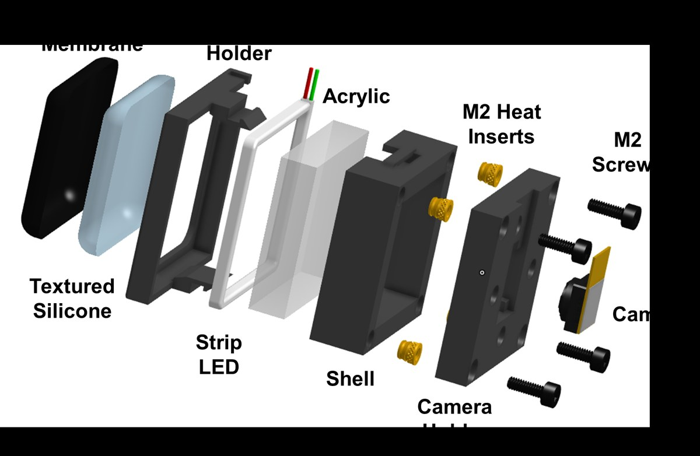
Flat pad
Nitrile membrane over textured silicone; strip LED around the acrylic.
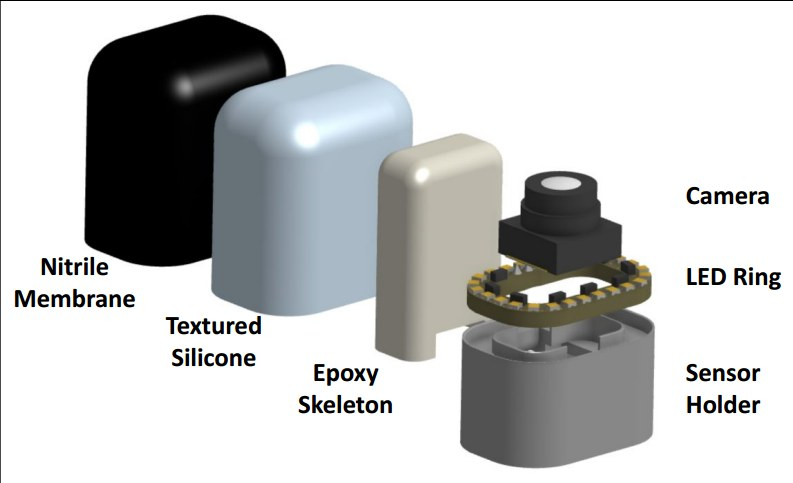
Fingertip
Textured silicone over a clear epoxy skeleton with an LED ring.
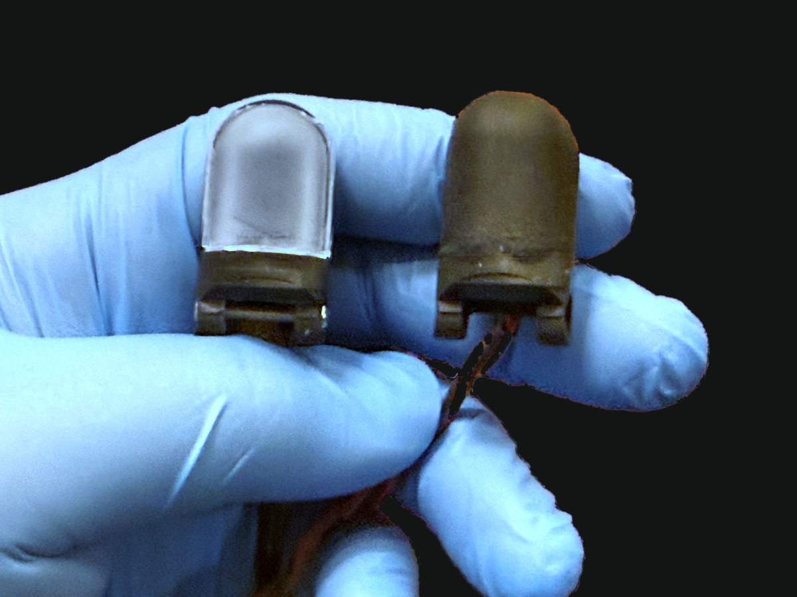
Humanoid finger
About 17 mm wide with front-facing tactile coverage.
DAT Results
What the flat pad measures.
DAT / 01 Light touch
It sees two millinewtons.
An M&M at 1.0 g (9.8 mN) and an M2 screw at 0.2 g (1.96 mN) both show in the raw frame under their own weight.
M&M1.0 g · 9.8 mN
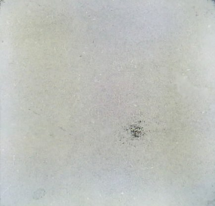
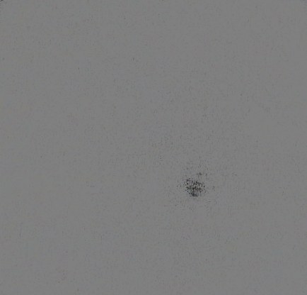
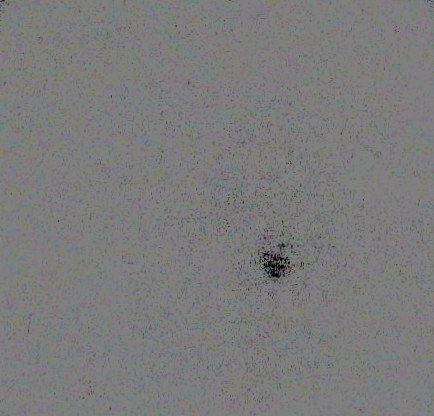
M6 nut2.0 g · 20.0 mN
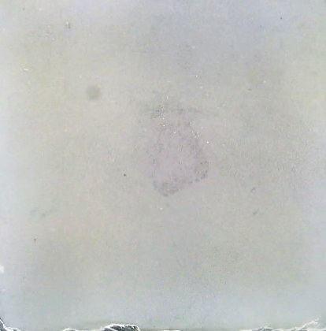
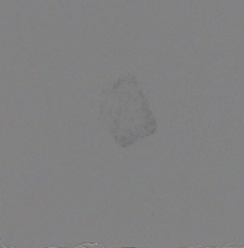
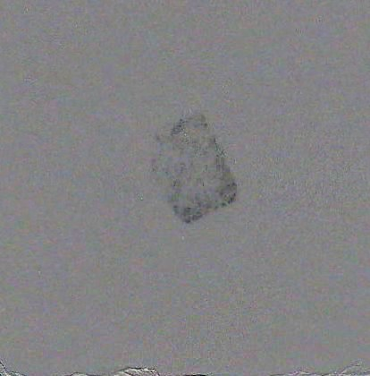
M5×6 screw2.4 g · 23.5 mN
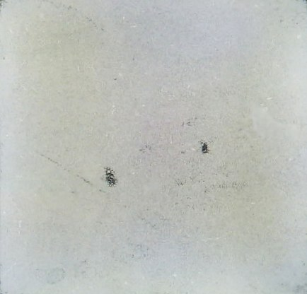
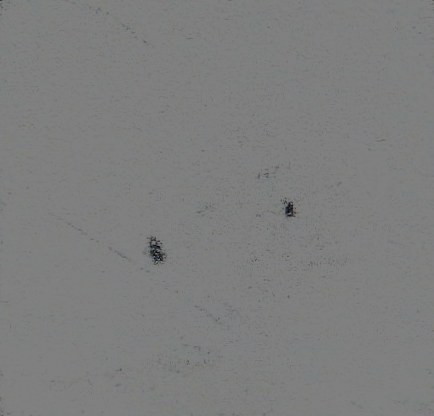
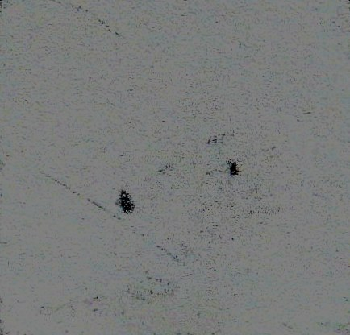
Passive placement is a demonstration; the controlled threshold test gives a 0.12 N median minimum detectable force at SNR = 3 across 10 probes.
DAT / 02 Geometry
One dark image, turned in three dimensions.
Relief from a single frame’s darkening resolves M1 threads at 0.25 mm pitch.
TURNTABLE
 M1–M3 screw threads
M3, M2.5, M2, M1.5 and M1 set screws
M1–M3 screw threads
M3, M2.5, M2, M1.5 and M1 set screws
 Phillips screw head
Cross recess inside a round head
Phillips screw head
Cross recess inside a round head
 4.7 mm calibration balls
Spherical caps at a known radius
4.7 mm calibration balls
Spherical caps at a known radius
 Oreo embossing
Raised lettering and floret border
Oreo embossing
Raised lettering and floret border
 Swirl ridge pattern
Repeating ridge band across the pad
Swirl ridge pattern
Repeating ridge band across the pad
 Knurled cell terminal
Cross-hatched knurl on a circular face
Knurled cell terminal
Cross-hatched knurl on a circular face
 M2 hex socket head
Recessed drive inside a raised rim
M2 hex socket head
Recessed drive inside a raised rim

Qualitative relief from one tactile frame, not validated against measured heights.
DAT / 03 Shear
It reads the sideways pull.
Dense Farnebäck flow on the gel’s own speckle yields a usable field over 97.8 % of the pad, 0.037 px forward–backward.
Readouts per frame: slide, twist, spread, slip; the red outline is the contact.
One parameter set, five objects
| Measure | Value |
|---|---|
| Usable field, LCN + CLAHE | 97.8 % |
| Usable field, CLAHE alone | 72.0 % |
| Forward–backward consistency | 0.037 px median, 0.16 px at p90 |
| Flow score, self-supervised | 74 / 100 |
| Full field, one core, 0.23 MP | 13 fps |
| Global scalar alone | about 60 fps |
| Peak contact, coin to fingertip | 5 % to 32 % |
Self-supervised consistency on one reference press; no ground truth; pixels, not calibrated force.
DAT / 04 Normal force
Darkness carries the load.
A learned regressor reads normal force from the frame: 0.106 N mean error on everyday objects, 0.276 N RMSE on controlled probes.
| Object | MAE, N |
|---|---|
| Balloon | 0.087 |
| Light bulb | 0.093 |
| Pipe | 0.127 |
| Rope | 0.117 |
| Macro average | 0.106 |
| Controlled probes, by force range | |
| 0 – 0.5 N | 0.056 |
| 0.5 – 2 N | 0.058 |
| 2 – 20 N | 0.209 |
Estimated by a model from the image, not measured by the camera; 14716 frames, held-out contact locations.
DOC / 01 Research record
GlowTact
Simple and Compact Vision-Based Tactile Sensing with High Sensitivity and Spatial Resolution